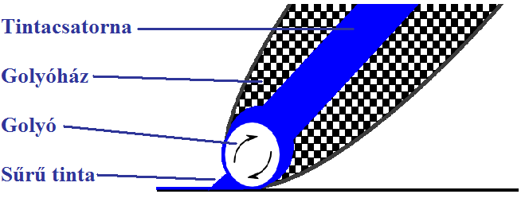

Legismertebb találmányához, a golyóstollhoz is újságírói hivatása vezette el. Azonban mint minden találmánynak, így a golyóstollnak is voltak korábbi elődei.
-
Az első író-toll a tintába mártott madártoll volt. Szükséges volt a folyamatos írás érdekében meghosszabbítani a két tintába mártás közötti írásra használt időt, valamint megszüntetni a tinta szétfröcskölődéséből adódó szennyeződést, és tökéletesíteni az íróeszköz kezelhetőséget.
-
1884-ben L. E. Waterman, egy New York-i biztosítási üzletember készítette el az első töltőtoll terveit, mely az elkövetkező 60 év meghatározó íróeszközévé vált.
-
1912-ben Németországban, Wilhelm Braun is tett kísérleteket arra, hogy továbbfejlessze a töltőtollat. Sajnos a tollak csak elvben működtek, a gyakorlatban nem.
-
1924-ben G. L. Lorenz, Drezdában egy új tollat fejlesztett ki, melyet Mungo néven gyártottak, s mintadarabjait a Lipcsei vásáron árusították. Ezek a tollaknak azonban csak 1-2 napig voltak használhatóak.
-
1938-ban Wenczel Climes cseh feltaláló szabadalmaztatott egy új típusú tollat, mely szintén csak a tervezőasztalon működött, gyakorlatilag azonban használhatatlan volt.
Bíró László József áttanulmányozta a cseh Wenczel Climes szabadalmaztatott ötletét, majd továbbfejlesztette azt.